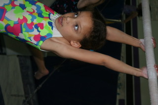
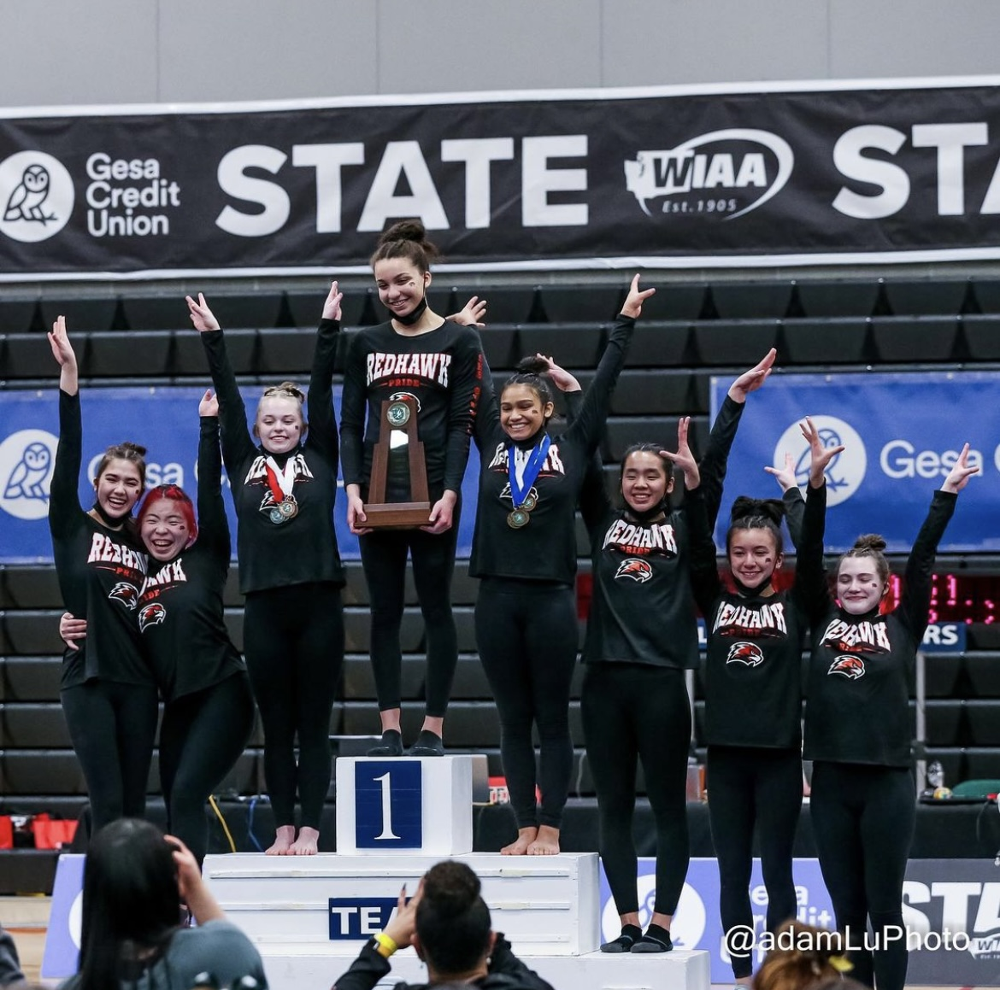

From a very young age, gymnastics has been a major part of my life. I practicaly grew up in a gym amidst the beams and the bars and the foam pits. Like most kids, I started at a young age and just kept on coming back. It was my best friends and I's hobby. I lived in Connecticut at the time, right next to her and it was something we did it together.

I've moved a lot in my life, but gymnastics has always followed me around. When my family and I moved to Washington, I joined Gymnastics East, a gym that would become my home for the next few years of my life. I soon joined the competitive team called Excel Bronze. For the first time, I was a competitive gymnast which meant longer hours in the gym and grueling workouts. Summers are full of memories of spending 4 hours in the gym with no air conditioning.
I started rising up in levels and eventually moved to high school. Surprisingly, I spent less time in the gym and spent more time in front of a computer screen completing my many hours of homework. It was getting harder and harder to have time for such a commitment. Quickly, gymnastics became less of a priority to me and I was ready to move away from it. I quit being a competive gymnast and left my coaches, teammates, and the gym I'd known for years.
Next I joined a high school gymnastics team. My school didn't offer gymnastics, so I had to go to an alternative public school. At first, I was very hesitant. I would be entering into unknown territory and I wasn't sure I would enjoy it. As the first day of practice came closer and closer, I wanted to quit more and more. But I went to practice and meet the most welcoming community I'd experienced. I didn't feel like an outcast despite being from a seperate school and my first year, my team got 2nd place in the State. Because I joined as a sophomore and covid took away my junior year, my senior year was really only my second year competiting. I enjoyed my last year with my teamamtes and my coach who is a second mother to me and we were able to win 1st in the State as a team, beating out the team that had beat us 2 years prior. That team will always mean a lot to me.
